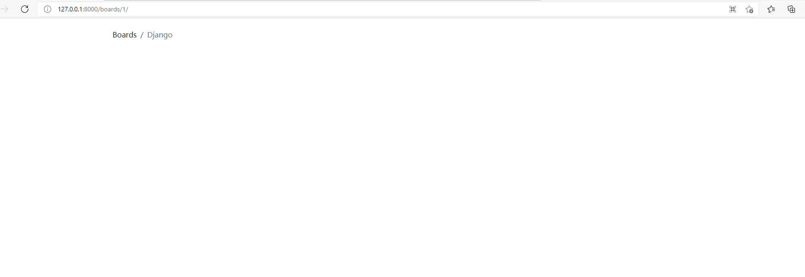

URLs
我们要实现一个新的功能，就是列出某个板块下的所有主题列表。
首先，我们要了解一个函数re_path()，re_path(route, view, kwargs=None, name=None)返回一个元素，以便包含在urlpatterns中。route 参数应该是一个字符串或 gettext_lazy() ，它包含一个与 Python 的 re 模块兼容的正则表达式。字符串通常使用原始字符串语法（r''），因此它们可以包含像 /d 这样的序列，而不需要用另一个反斜杠来转义。当进行匹配时，从正则表达式中捕获的组会被传递到视图中 —— 如果组是命名的，则作为命名的参数，否则作为位置参数。值以字符串的形式传递，不进行任何类型转换。
在这里先修改boards/urls开始修改：
boards/urls
1 | from django.urls import path, re_path |
URL 调度器（dispatcher）和 URLconf （URL configuration）是 Django应用中的基础部分。
一个项目可以有很多 urls.py 分布在多个应用（app）中。Django 需要一个 url.py作为入口。这个特殊的 urls.py 叫做 根路由配置（root URLconf）。它被定义在 settings.py 中。
1 | ROOT_URLCONF = 'myproject.urls' |
它已经自动配置好了，你不需要去改变它任何东西。
当 Django 接受一个请求（request）， 它就会在项目的 URLconf 中寻找匹配项。他从 urlpatterns 变量的第一条开始，然后在每个 url 中去匹配请求的 URL。
如果 Django 找到了一个匹配路径，他会把请求（request）发送给 re_path 的第二个参数 视图函数（view function）。 urlpatterns 中的顺序很重要，因为 Django 一旦找到匹配就会停止往后搜索。如果 Django 在 URLconf 中没有找到匹配项，他会通过 Page Not Found 的错误处理代码抛出一个 404 异常。
基础URLs路由
基础URL创建起来很容易。就只是个匹配字符串的问题，比如说，我们想创建一个”about”页面，可以这样定义：
1 | urlpatterns = [ |
也可以创建更深层一点的URL结构：
1 | urlpatterns = [ |
对于上面的例子，视图函数如下：
1 | def about(request): |
高级URLs路由
更高级的URL路由使用方法是通过正则表达式来匹配某些类型的数据并创建动态URL。
列如，要创建一个个人资料的页面，可以这样做：
1 | urlpatterns = [ |
它会匹配 Django 用户模型里面所有有效的用户名。
现在我们可以看到上面的例子是一个很宽松的 URL。这意味大量的 URL patterns 都会被它匹配，因为它定义在 URL的根，而不像 /profile//这样。在这种情况下，如果我们想定义一个/about/ 的URL，我们要把它定义在这个 username URL pattern 的前面∶
1 | urlpatterns = [ |
如果这个"about" 页面定义在usrename URL pattern 后面，Django 将永远找不到它，因为"about"这个单词会先被usrname的正则表达式所匹配到，视图函数 user_profile 将会被执行而不是执行 about 。
此外，这有一些副作用。例如，从现在开始，我们要把"about" 视为禁止使用的username，因为如果有用户将"about"作为他们的username，他们将永远不能看到他们的个人资料页面，而看到的about页面。
开始的时候，我们使用Board ID去创建 Topics列表的动态页面。让我们再来看一下我在 URLs 开头的部分给出的例子∶
1 | re_path(r'^boards/(?P<pk>\d+)/$', views.board_topics, name='board_topics') |
正则表达式中的 \d+，会匹配一个任意大小的整数值。这个整数值用来从数据库中取到 指定的 Board。现在注意我们这样写这个正则表达式 （? P<pk>d+），这是告诉 Django 将捕获到的值放入名为 pk 的关键字参数中。这时我们为它写的一个视图函数∶
1 | def board_topics(request, pk): |
因为我们使用了 （?P<pk>d+）正则表达式，在 board_topics 函数中，关键字参数必须命名为 pk。
如果你想在视图函数使用任意名字的参数，那么可以这样定义∶
1 | url(r'^boards/(\d+)/$',views.board_topics,name='board_topic s') |
然后在视图函数可以这样定义∶
1 | def board_topics(request,board_id): |
或者这样:
1 | def board_topics(request,id): |
名字不重要，但是使用命名参数是一个很好的办法，因为，当我们有个更大的URL去捕获多个ID和变量时，这会更加便于我们阅读。
使用URLS API
现在来写代码实现开头提到的主题列表页面。
首先，编辑boars/urls.py添加新的URL路由。
1 | urlpatterns = [ |
再创建视图函数board_topics：
1 | def board_topics(request, pk): |
在templates目录中，创建一个名为topics.html的模板：
1 | {% load static %} |
在浏览器中访问http://127.0.0.1:8000/boards/1/，显示下面结果：
